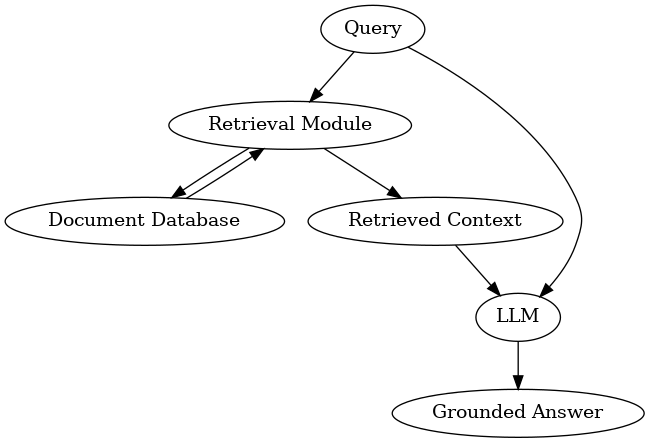

Learning Goals#
Define Retrieval-Augmented Generation (RAG) and why it matters for research.
Contrast RAG with fine-tuning and plain prompting; identify trade-offs.
Recognize common research use cases and pitfalls (stale sources, grounding).
Name the core components of a RAG system (retrieval, ranking, prompting, generation).
Module 1: Introduction to Retrieval-Augmented Generation (RAG)#
Part of the RCD Workshops series: RAG for Research Applications
from utils import create_answer_box
create_answer_box(
"Please briefly describe your background with RAG, LLMs, and python. Are you very familiar with each of these? Entirely unfamiliar? Somewhere in between?Are there any particular things you're hoping to learn in today's workshop?",
question_id='mod1_background'
)
Please briefly describe your background with RAG, LLMs, and python. Are you very familiar with each of these? Entirely unfamiliar? Somewhere in between?Are there any particular things youre hoping to learn in todays workshop?
1.1 What is RAG and Why Do We Need It?#
Retrieval-Augmented Generation (RAG) combines a pretrained large language model (LLM) with an external data retrieval system so that answers are grounded in up-to-date, relevant external knowledge. Instead of relying solely on what the LLM knows, RAG-enabled systems can consult databases or document corpora to generate better, more trustworthy responses.
Motivations for RAG in Research#
Reduce hallucinations: LLMs sometimes make up answers. RAG anchors model outputs using real documents.
Extend knowledge: LLMs have a training cutoff; RAG lets you search new/specialized info on demand.
Enable citations & trust: In research and academic settings, RAG allows citation of sources and provenance.
Lower costs: Augmenting a frozen LLM with retrieval is much cheaper than fine-tuning or retraining.
1.2 Examples & Use Cases#
Open-domain QA: e.g., What did NASAs latest exoplanet report reveal? Without RAG, an LLM trained in 2023 might guess or generalize; with RAG, it can pull excerpts from NASAs 2025 press release and summarize the confirmed findings.
Research assistant: e.g., A RAG system connected to PubMed retrieves and summarizes the newest trials on CRISPR therapies, grounding each summary in citations.
Data-aware report generator: e.g., A RAG pipeline for sustainability research can pull recent regional temperature data and generate a grounded report, rather than hallucinating statistics.
1.3 RAG vs. Other Approaches#
Versus Fine-tuning: Fine-tuning builds new knowledge into the model weights (very costly/slow). RAG keeps the model fixed and only augments its inputs with up-to-date evidence.
Versus traditional search: Search finds docs, but RAG finds and reads/summarizes them for you, so you get the answer directly.
Versus plain prompting: Without retrieval, the LLM answers from memory; with RAG, it cites and grounds responses in retrieved evidence.
1.4 Core Components of a RAG System#

Retrieval: Ingest and index documents (often via chunking + embeddings) and fetch top-k candidates for a query.
Ranking: Re-rank retrieved passages (e.g., BM25 + dense, or cross-encoder rerankers) to improve relevance.
Prompting: Build an instruction + query + selected context prompt that guides the LLM to ground answers and cite sources.
Generation: Use the LLM to produce an answer constrained by the provided evidence.
Other lifecycle pieces include ingestion (chunking/overlap), indexing refresh, evaluation, and observability.
from utils import create_answer_box
create_answer_box(
"Why is \"prompting\" one of the core components of a RAG system that we need to build? After all, isn't it the user who will provide the prompt?",
question_id='mod1_components'
)
Why is prompting one of the core components of a RAG system that we need to build? After all, isnt it the user who will provide the prompt?
1.5 Common Pitfalls and Mitigations#
Stale sources: Indexes drift out of date; schedule refreshes and show source timestamps in answers.
Irrelevant retrieval: Poor embeddings or queries lead to noise; tune chunking, add query expansion, and apply reranking.
Over/under-chunking: Too large misses specifics; too small loses context; use overlap and validate chunk sizes.
Context overflow: Excess context gets truncated; limit k, compress or summarize context, and instruct concise citation.
Prompt injection/untrusted content: Retrieved text may contain instructions; sanitize inputs and instruct the model to ignore instructions from context.
from utils import create_answer_box
create_answer_box(
"You are certain that your RAG source documents are good, but you're still getting terrible results -- the model is hallucinating some facts and getting other facts dead wrong. What could be the problem?",
question_id='mod1_pitfalls'
)
You are certain that your RAG source documents are good, but youre still getting terrible results the model is hallucinating some facts and getting other facts dead wrong. What could be the problem?
from utils import create_answer_box
create_answer_box(
'**How might RAG be relevant to your research?**',
question_id='mod1_advantage_rag'
)
How might RAG be relevant to your research?
Wrap-Up#
You now understand what RAG is, why its important for scientific/academic research, and how it compares with other ways of expanding a language models knowledge.
Next: In the following module, youll get hands-on with document retrieval and see how modern vector-based retrieval (using embeddings) powers RAG systems.